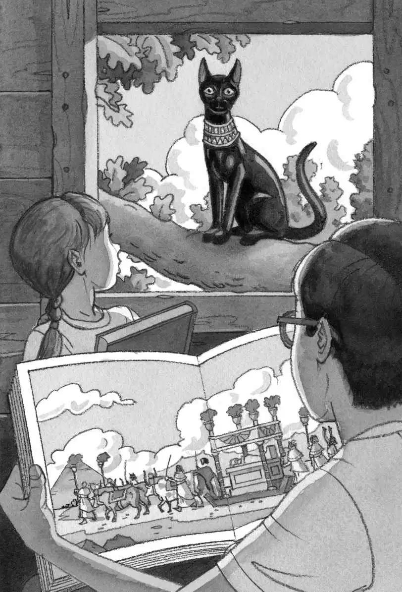

“It’s still here,” said Jack.
“It looks empty,” said Annie.
Jack and his seven-year-old sister gazed up at a very tall oak tree. At the top of the tree was a tree house.
Late-morning sunlight lit the woods. It was almost time for lunch.
“Shhh!” said Jack. “What was that noise?”
“What noise?”
“I heard a noise,” Jack said. He looked around. “It sounded like someone coughing.”
“I didn’t hear anything,” said Annie. “Come on. Let’s go up.” She grabbed the rope ladder and started climbing.
Jack tiptoed over to a clump of bushes. He pushed aside a small branch.
“Hello?” he said. “Anybody there?”
There was no answer.
“Jack! Come on!” Annie called down. “The tree house looks the same as it did yesterday.”
Jack still felt that someone was nearby. Could it be the person who’d put all the books in the tree house?
“Ja-ack!” called Annie.
Jack gazed over the top of the bushes.
Was the mysterious M person watching him now? Maybe M wanted the gold medallion back—the one Jack had found on their dinosaur adventure. Maybe M wanted the leather bookmark back—the one from the castle book.
There was an M on the medallion and an M on the bookmark. But what did M stand for?
“Tomorrow I’ll bring everything back,” Jack said loudly.
A breeze swept through the woods. The leaves rattled.
“Come on!” called Annie.
Jack went back to the big oak tree. He grabbed the rope ladder and climbed up.
When he reached the top, he crawled through a hole in the wooden floor. He tossed down his backpack and pushed his glasses into place.
“Hmmm. Which book is it going to be today?” said Annie. She was looking at the books scattered around the tree house.
Annie picked up the book about castles. Just yesterday, the castle book had taken Jack and Annie back to the time of knights.
“Hey, this isn’t wet anymore,” she said. She handed the book to Jack.
“You’re right!” said Jack, amazed. The book had gotten soaked in a castle moat, but today it looked fine. Jack silently thanked the mysterious knight who had rescued them.
“Watch out!” warned Annie. She waved a dinosaur book in Jack’s face.
“Put that away,” Jack said nervously. The day before yesterday, the dinosaur book had taken them to the time of dinosaurs. Jack silently thanked the Pteranodon who had saved him from a Tyrannosaurus rex.
Annie put the dinosaur book back with the other books. Then she gasped.
“Wow,” she whispered. “Look at this.” She held up a book about ancient Egypt.
Jack caught his breath. He took the book from her. A green silk bookmark was sticking out from between the pages.
Jack turned to the page with the bookmark. There was a picture of a pyramid.
Going toward the pyramid was a long parade. Four huge cows with horns were pulling a sled. On the sled was a long gold box. Many Egyptians were walking behind the sled. At the end of the parade was a sleek black cat.
“Let’s go there,” whispered Annie. “Now.”
“Wait,” said Jack. He wanted to study the book a bit more.
“Pyramids, Jack,” said Annie. “You love pyramids.”
It was true. Pyramids were high on Jack’s list of favorite things, after knights and dinosaurs—plant-eating dinosaurs, that is.
He didn’t have to worry about being eaten by a pyramid.
“Okay,” he said. “But hold the Pennsylvania book. In case we want to come right back here.”
Annie found the book with the picture of their hometown in it: Frog Creek, Pennsylvania.
Jack pointed to the pyramid picture in the Egypt book. He cleared his throat and said, “I wish we could go to this place.”
“Meow!”
“What was that?” Jack looked out the tree house window.
A black cat was sitting on a branch right outside the window. The cat was staring at Jack and Annie.
It was the strangest cat Jack had ever seen. It was very sleek and dark, with bright yellow eyes and a wide gold collar.
“It’s the cat in the Egypt book,” whispered Annie.
The wind started to blow. The leaves began to shake.

“Here we go!” cried Annie.
The wind whistled louder. The leaves shook harder.
Jack closed his eyes as the tree house started to spin.
It spun faster and faster.
Then everything was still.
Absolutely still.